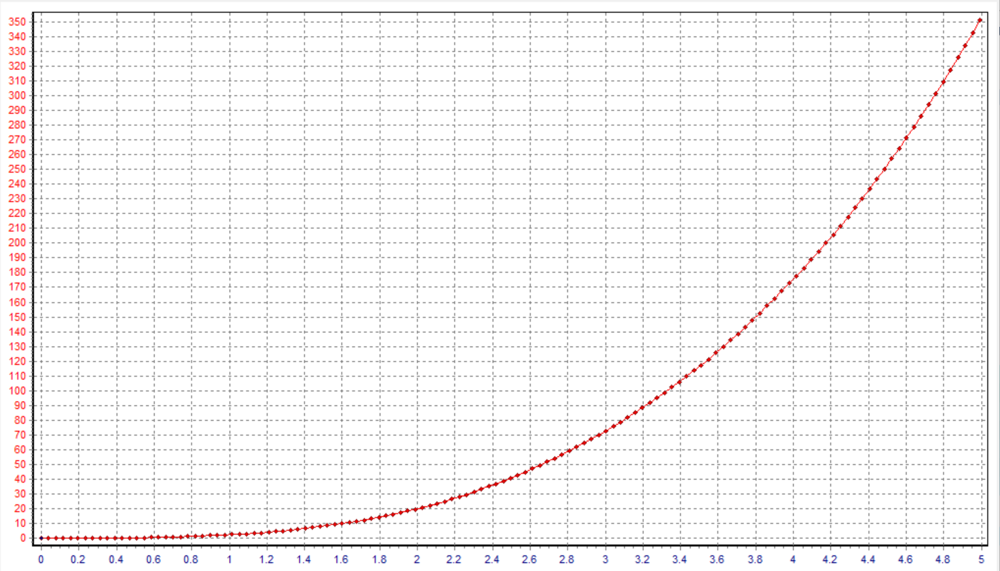
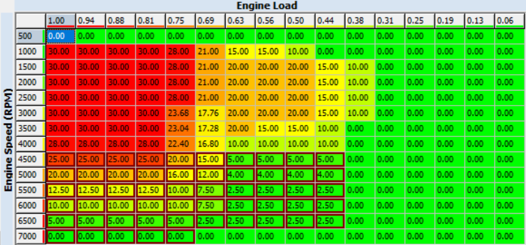
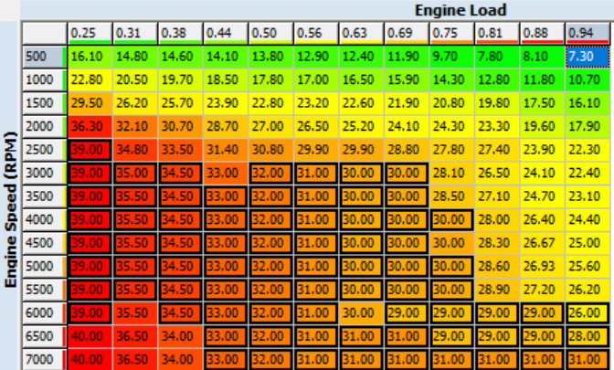
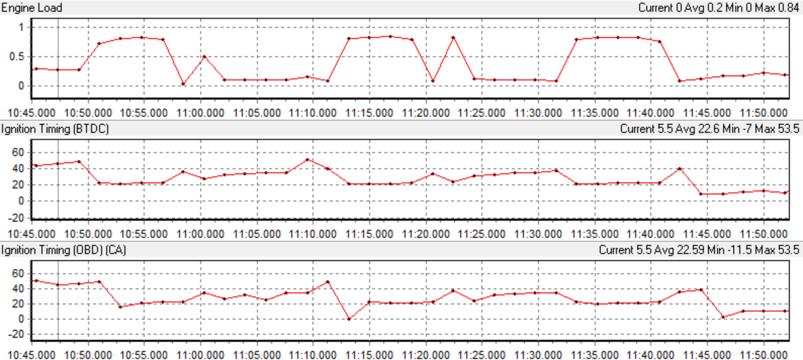
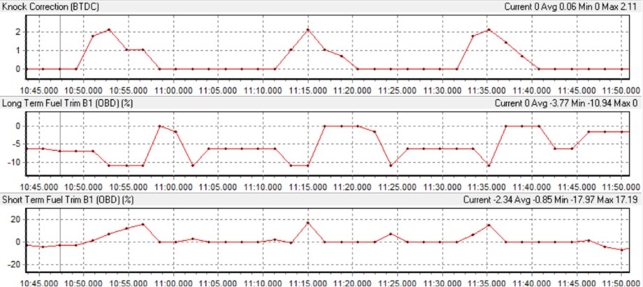
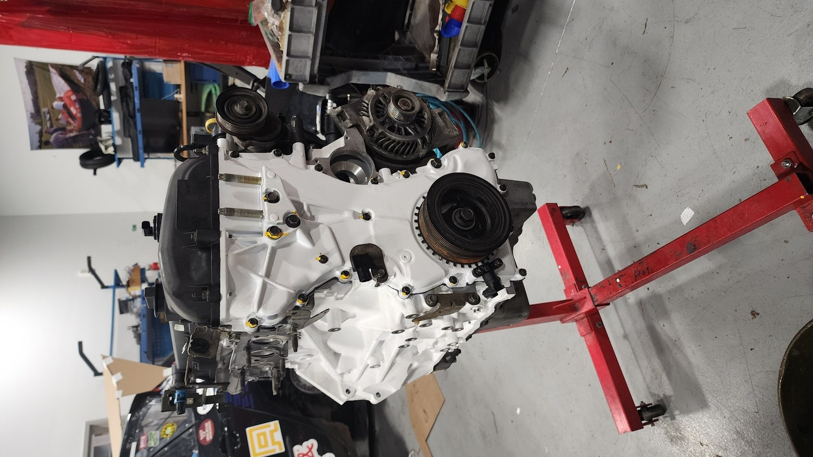
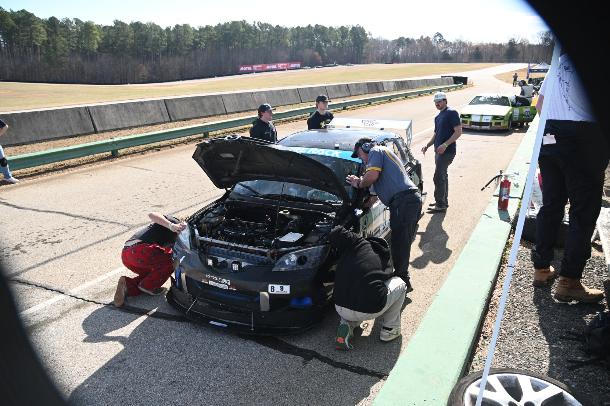
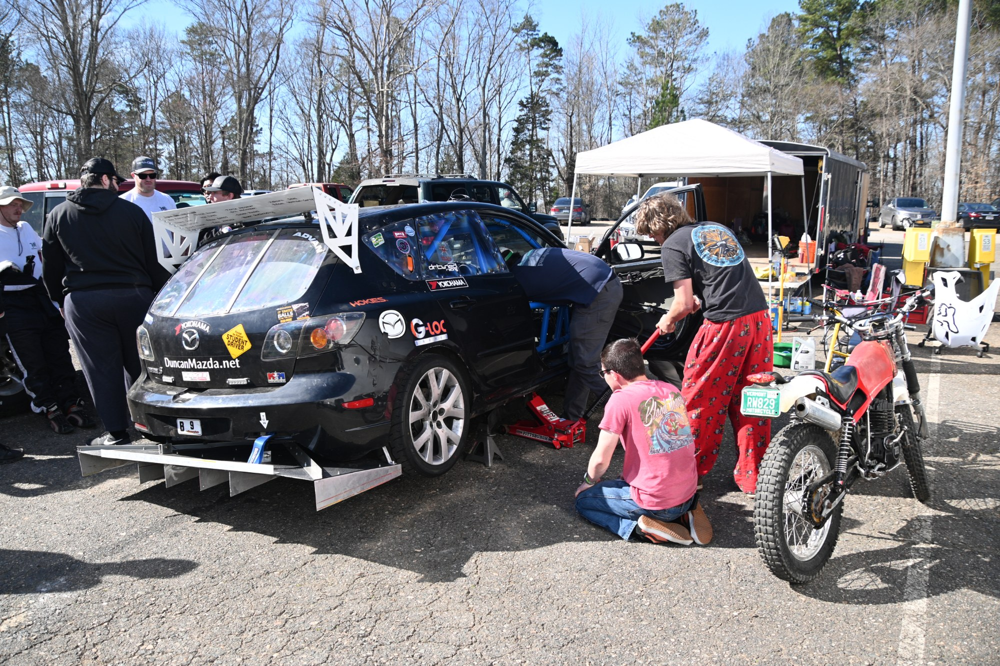
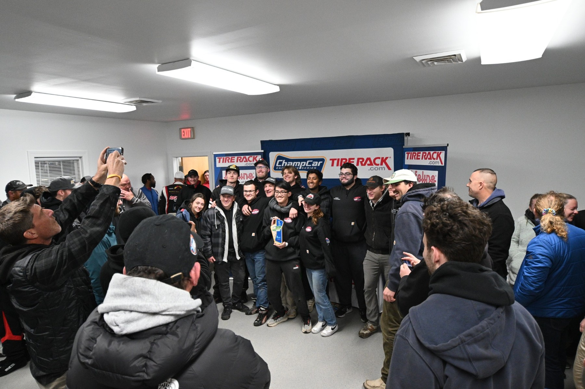

Project Overview
Virginia Tech Grand Touring (VTGT) is a mechanical engineering senior design program that develops a student-built endurance race car for a 12-hour ChampCar event at Virginia International Raceway. Our 14-member team worked across the full vehicle, including the cooling system, aerodynamics, intake, engine calibration, suspension geometry, fabrication, maintenance, testing, and race operations.
My primary technical project was engine tuning. The objective was not simply to chase peak power; the calibration had to take advantage of improved engine airflow while remaining dependable enough to survive endurance racing. That meant treating power, knock control, fueling, high-RPM performance, and reliability as one coupled engineering problem.
Reliability-First Engine Tuning
The tuning strategy was built around optimizing the naturally aspirated engine after airflow improvements to the intake and exhaust system. The calibration work focused on the mass-air-flow transfer function, variable intake valve timing, ignition timing, knock behavior, air-fuel ratio, and fuel trims.
Selecting the calibration strategy
For an endurance car, an aggressive tune that produces more peak power but reduces durability is a poor trade. I used a weighted concept selection process that placed 50% of the decision weight on reliability, followed by power and high-RPM performance. The resulting choice was a mild ignition-advance and intake-valve-duration strategy rather than the most aggressive calibration.
Mass-air-flow calibration
The MAF transfer function was recalibrated to reflect the engine's increased airflow after intake, exhaust, and scavenging changes. This ensured that sensor voltage continued to map to an appropriate estimated mass flow so the ECU could meter fuel correctly as volumetric efficiency changed.

Valve timing & ignition maps
Variable intake valve timing was adjusted across engine speed and load to improve cylinder filling and scavenging in the useful race operating range. Spark advance was then calibrated against engine speed and load to improve torque while maintaining margin against knock.


Iterative Testing & Calibration Validation
The tune was iterated during controlled straight-line testing on the VTTI highway section over approximately 30% to 100% engine load. Data logging was used to evaluate engine load, ignition timing, knock correction, short-term fuel trim, and long-term fuel trim before making further changes.
Final reported operating range, remaining at or richer than stoichiometric under the tested conditions.
Knock correction was kept around the team's <2° performance target under load.
Calibration requirement used to verify stable short-term fueling behavior.
Calibration requirement used to monitor longer-term fueling correction.


The calibration was finalized and then tested under the real endurance-race duty cycle. The engine ran reliably without issue for the duration of the race.
Whole-Vehicle Development
The engine tune was one part of a larger vehicle-development program. Other team members designed, fabricated, and tested the radiator support, rear diffuser, side skirts, revised intake, and roll-center correction. The final senior-design results showed measurable improvements across the car.
Radiator Support
Met the team's weight and durability requirements and remained secure through testing and the race.
Rear Diffuser
VTTI testing reported an average 30% increase in measured underbody airspeed over three 60-mph trials.
Side Skirts
Pitot-tube testing measured 19.7% higher underbody airspeed with the skirts installed.
Air Intake
Testing reported 35% higher airflow at 25 mph and a 50% reduction in the intake-to-ambient temperature difference at 2200 rpm.
Roll Center Correction
Skid-pad results showed an increase in maximum cornering force, with the team's analysis reporting 31.2% improvement.
The Work Required to Finish an Endurance Race
Race-car development did not stop at subsystem design. The year required frequent testing, repairs, maintenance, fabrication, parts sourcing, and preparation for failures that could happen at any point during a 12-hour event. Major work across the program included an engine rebuild, transmission swap, subframe swap, fabrication, setup, spares preparation, and rapid diagnosis on race day.



First in Class
The team completed 141 laps and spent six hours on track, improving substantially over the prior VTGT entry's 84 laps and three hours of running. That represents roughly 68% more laps and double the track time. Most importantly, the 2024–2025 team became the first VTGT team in program history to place first in class.
